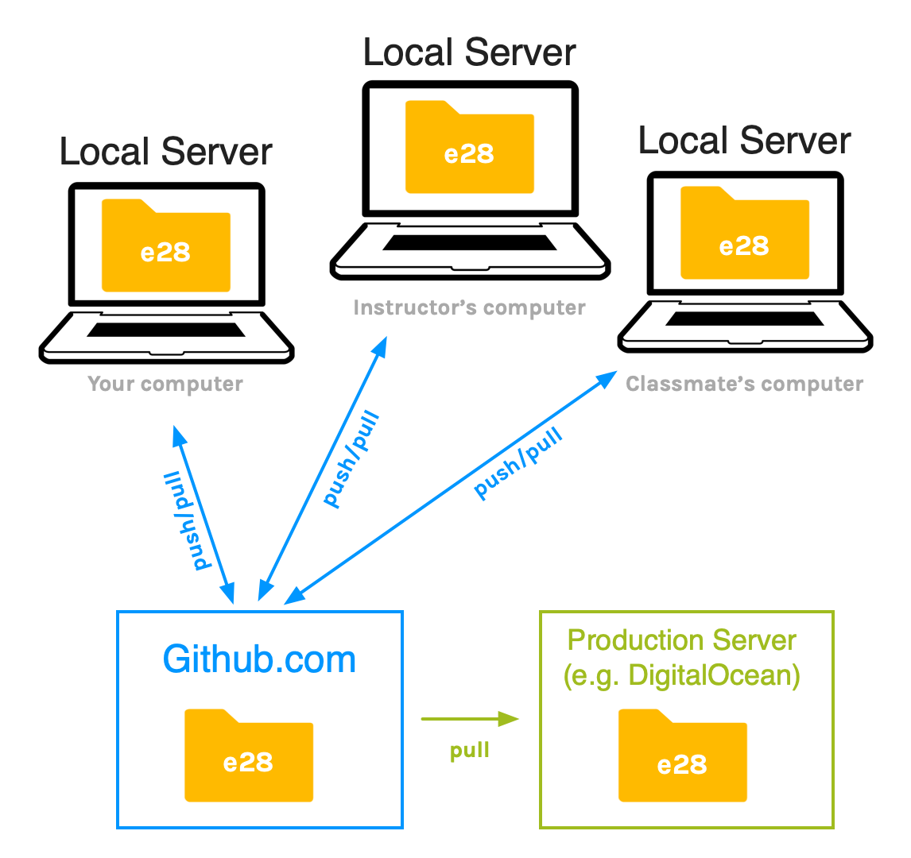
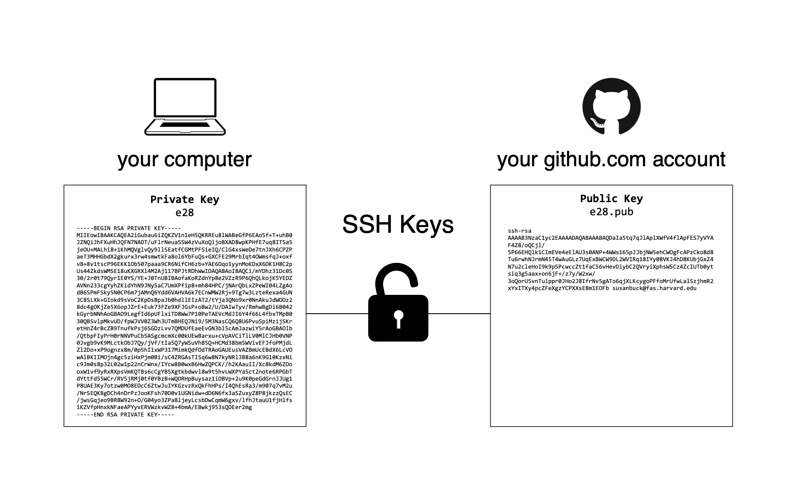

Github setup
Version control systems like git work around the idea of repositories. A repository is just a directory that is being tracked by git.
A repository can exist solely on your computer, but it’s most useful when it also exists online where it can be accessible to collaborators.
There are many ways you can store/manage your repositories online, but one of the most common ways is via a web service like Github.com.
Repositories stored on Github can be publicly accessible - this is useful for open-source projects where you want the content of your code to be available to the general public. It’s also useful in a educational context such as ours, when we want to freely share our code for learning purposes.
Repositories can also be private, which would restrict access to only certain people (e.g. developers working on a project for a company).
Regardless of the privacy settings, hosting your repositories on a service like Github.com makes it easy to share your code base with collaborators, and it provides a location for a "master" repository that all stakeholders and servers can push/pull from.
Now that we understand the purpose of Github.com, we want to get set up with an account and configure our computers to connect directly to Github.com via our git command line tool using a protocol called SSH (Secure Shell).
Just like with the git setup, if you regularly use Github.com, the following instructions can likely be skimmed/skipped.
Create an account at Github.com
If you don’t already have an account with Github.com, visit Github.com and create a free personal account.
SSH keys
To communicate with Github.com from your computer (via Git), we’ll use the SSH protocol which will require SSH Keys.
“SSH keys provide a more secure way of logging into a server rather than using a password alone. While a password can eventually be cracked with a brute force attack, SSH keys are nearly impossible to decipher by brute force alone. Generating a key pair provides you with two long string of characters: a public and a private key. You can place the public key on any server, and then unlock it by connecting to it with a client that already has the private key. When the two match up, the system unlocks without the need for a password.” -source
The other protocol option available with Github.com is https; this protocol requires less setup, but will require you to enter your Github.com credentials frequently when working with Git. Furthermore, you’ll need SSH keys with your production servers, so knowing how to create and use them will be useful.
Generate SSH keys on your computer
Via command line, move into the .ssh directory in your home directory:
Mac users:
$ cd ~/.ssh
(FYI: ~/ is a shortcut for your home directory on Mac)
Windows users:
$ cd %homepath%\.ssh
(FYI: %homepath% is a shortcut for your home directory on Windows)
If a .ssh directory does not exist, create it and then navigate into it:
Mac:
$ mkdir ~/.ssh
$ cd ~/.ssh
Windows:
$ mkdir %homepath%\.ssh
$ cd %homepath%\.ssh
Next, within the .ssh directory, run the following command to generate a new SSH key
pair:
$ ssh-keygen -t rsa -C "your_email@example.com"
When it asks you to “Enter file in which to save the key”, it’s asking you to name the key. Enter the name e28 (you’ll use this key for all your server access in this course).
Enter file in which to save the key (/Users/YourName/.ssh/id_rsa): [Press enter]
When it asks you to create a passphrase, leave it blank and hit enter. (Side note: Why we don’t use a password...)
When the above command is complete, list the contents of your .ssh directory and you
should
see two new key files, e28 and e28.pub.
Example:
drwx------+ 21 Susan staff 672 Sep 5 17:02 ./
drwxr-xr-x+ 195 Susan staff 6240 Sep 7 10:31 ../
-rw-------@ 1 Susan staff 6148 Sep 12 2018 .DS_Store
-rw-r--r--+ 1 Susan staff 0 Jul 1 2014 authorized_keys
-rw-r--r--+ 1 Susan staff 153 Sep 5 17:10 config
-rw-------+ 1 Susan staff 1831 Sep 5 17:02 e28
-rw-r--r--+ 1 Susan staff 407 Sep 5 17:02 e28.pub
-rw-r--r--+ 1 Susan staff 3609 Jul 2 16:42 known_hosts
SSH config file
Next, you want to add this e28 key to your SSH config file so it can be used when you
attempt to make an SSH connection.
To do this, edit (or create if it doesn’t exist) a file called config in your
.ssh directory. This can be done with nano:
$ nano config
Add this line at the very end of the config file:
IdentityFile ~/.ssh/e28
Press ctrl + x then y then Enter to save your changes and exit nano.
Windows users: You may note that the path you’re specifying in the config
file (~/.ssh/e28) looks more like the Mac path than the Window’s path you’ve been
using
(%homepath%/.ssh/e28). This is normal - the SSH program won’t accept the
%homepath% shortcut, and it will successfully resolve the ~/
path, even on
Windows.
Add SSH key at Github.com
Next, we want to add the e28.pub (public key) as a new SSH key on your Github.com
account.
In the form for adding a new key, you want to copy over the contents of your public key
(e28.pub).
Tip for Windows users: To copy the contents of your public key from the Cmder window, simply select the text you wish to copy; it will automatically be added to your clipboard. If you have any issues with this, open the key file in Notepad and then copy it from there:
$ notepad e28.pub
Test it
To test your new SSH key, run the following command to connect to Github over SSH:
$ ssh -T git@github.com
You may see this warning the first time you connect:
The authenticity of host 'github.com (207.97.227.239)' can't be established.
# RSA key fingerprint is 16:27:ac:a5:76:28:2d:36:63:1b:56:4d:eb:df:a6:48.
# Are you sure you want to continue connecting (yes/no)?
Type yes and hit enter.
If all went well, you should see this message:
Hi username! You've successfully authenticated, but GitHub does not provide shell access.
If that username is yours, you've successfully set up your SSH key.
If you receive a message saying access or permission is denied read the troubleshooting section below.
Troubleshooting
Windows users: Bad owner or permissions on .ssh\config
Issue: When testing your Github ssh connection, you get this error:
Bad owner or permissions on C:\Users\YourName\.ssh\config
This may happen due to a permission issue on the SSH config file. To fix this, watch this video. (Note: In
the video, they key name is dwa, but in your case it will be named e28)
Get more details about a failed connection
If you SSH connection to Github isn’t working, try adding the v (verbose) flag which
will
output detailed information about the connection attempt:
ssh -vT git@github.com
From that output, confirm you see a line indicating it is reading the configuration data from the SSH config file you set up in the instructions above. E.g.:
Mac:
debug1: Reading configuration data /Users/Susan/.ssh/config
Windows:
debug1: Reading configuration data C:\\Users\\Susan/.ssh/config
Also scan the output to confirm it’s locating/using the e28 key you set up.
Narrow down the source of the problem
Two of the possible reasons why your connection to Github might fail include:
- The keys were set up wrong (e.g. you copied the wrong key into Github)
- Your SSH config file is not being read correctly
To narrow the source of problem down, you can do the SSH test and explicitly set the key to use,
overriding the SSH config. To do this, add the -i (identity) flag, followed
by the
path to your key file. E.g.:
Mac:
ssh -T -i ~/.ssh/e28 git@github.com
Windows:
ssh -T -i %homepath%/.ssh/e28 git@github.com
If the connection is successful this way, you know your keys are set up correctly and it’s an issue with your SSH config setup.